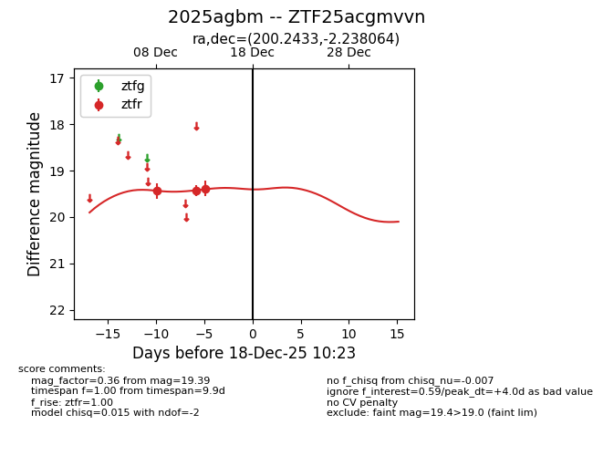
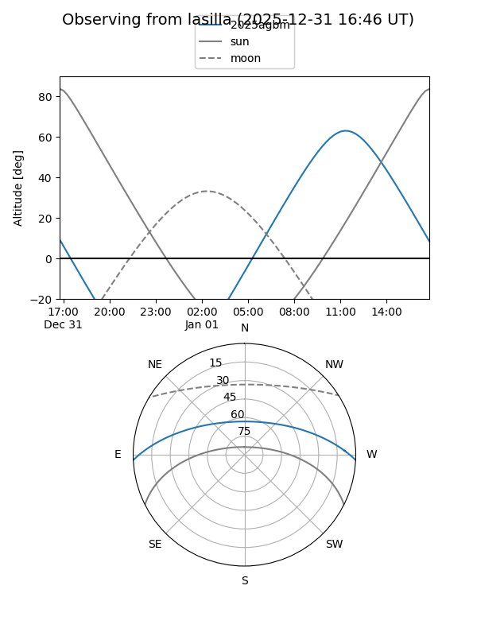
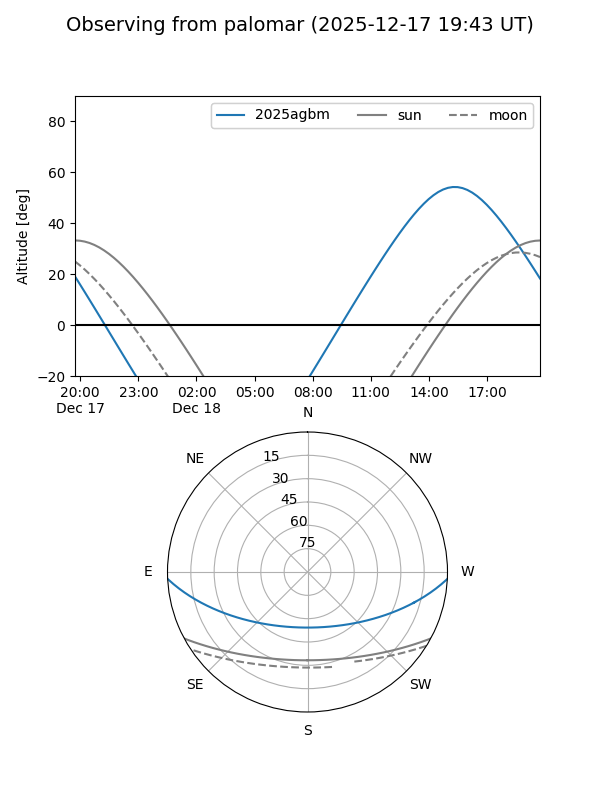

2025agbm
Target 2025agbm at 2025-12-18 11:17
Aliases and brokers:
FINK: fink-portal.org/ZTF25acgmvvn
Lasair: lasair-ztf.lsst.ac.uk/objects/ZTF25acgmvvn
ALeRCE: alerce.online/object/ZTF25acgmvvn
TNS: wis-tns.org/object/2025agbm
YSE: ziggy.ucolick.org/yse/transient_detail/2025agbm
alt names
ZTF25acgmvvn (ztf,fink_ztf)
2025agbm (tns,yse)
Coordinates:
equatorial (ra, dec) = 200.2433,-2.23806
equatorial (HMS+DMS) = 13:20:58.38,-02:14:17.03
galactic (l, b) = (317.7152,+59.78325)
Photometry
last ztfr=19.39
3 ztfr detections
Lightcurve

Visibility


Additional plots